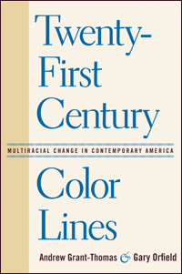

<body bgcolor="#FFFFFF" text="#000000" link="#0000FF" vlink="#CC0000" alink="#CC0000"><center><hr width="350" size="1" align="center" noshade>Exploring the multiracial, multiethnic “line” for the new century<hr width="350" size="1" align="center" noshade><p><a href="https://cdcshoppingcart.uchicago.edu/Cart/ChicagoBook.aspx?ISBN=9781592136919&&PRESS=temple" target="_top">Buy this book!</a> | <a href="https://cdcshoppingcart.uchicago.edu/Cart/Cart.aspx?PRESS=temple" target="_top">View Cart</a> | <a href="https://cdcshoppingcart.uchicago.edu/Cart/Cart.aspx?PRESS=temple" target="_top">Check Out</a></p><p></p></center><!--none//--><h1>Twenty-First Century Color Lines</h1>
<H2>Multiracial Change in Contemporary America</H2>
<H2>Foreword by Christopher Edley Jr.</H2>
<h3>edited by Andrew Grant-Thomas and Gary Orfield</h3>
<P>cloth 1-59213-691-5 $80.50, Nov 08, <FONT COLOR=#990033>Available</FONT>
<br>paper 1-59213-692-3 $29.95, Nov 08, <FONT COLOR=#990033>Available</FONT>
<br>Electronic Book 1-59213-693-1 $29.95 <FONT COLOR=#990033>Available</FONT>
<BR> 328 pp
6x9
19&nbsp;tables 3&nbsp;map(s) 8&nbsp;figures 3&nbsp;halftones
</P><BLOCKQUOTE><I>"An excellent and timely collection on an important set of civil rights issues."</I>
<BR>&#151<B>Pedro Noguera</B>, Steinhardt School of Culture, Education and Human Development at New York University<I></I></BLOCKQUOTE>
<P>The result of work initiated by the Harvard Civil Rights Project, this collection provides an excellent overview of the contemporary racial and ethnic terrain in the United States. The well-respected contributors to <I>Twenty-First Century Color Lines</I> combine theoretical and empirical perspectives, answering fundamental questions about the present and future of multiracialism in the United States: How are racial and ethnic identities promoted and defended across a spectrum of social, geopolitical and cultural contexts? What do two generations of demographic and social shifts around issues of race look like “on the ground?” What are the socio-cultural implications of changing demographics in the U.S.? And what do the answers to these questions portend for our multiracial future?</P>
<P>This illuminating book addresses issues of work, education, family life and nationality for different ethnic groups, including Asians and Latinos as well as African Americans and whites. Such diversity, gathered here in one volume, provides new perspectives on ethnicity in a society marked by profound racial transformations.</P>
<P><I>Contributors: Luis A. Avilés, Juan Carlos Martínez-Cruzado, Nilanjana Dasgupta, Christina Gómez, Gerald Gurin, Patricia Gurin, Anthony Kwame Harrison, Maria-Rosario Jackson, John Matlock, Nancy McArdle, John Mollenkopf, john a. powell, Doris Ramírez, David Roediger, Anayra Santory-Jorge, Jiannbin Lee Shiao, Mia H. Tuan, Katrina Wade-Golden and the editors.</I></P>
<BR>&nbsp;<h2>Excerpt</h2><P>Excerpt available at <a href="http://www.temple.edu/tempress">www.temple.edu/tempress</a></p>
<BR>&nbsp;<h2>Reviews</h2>
<p><i>"A useful edited collection of essays on diverse US racial-ethnic issues, this book grew out of a 2003 Harvard Civil Rights Project conference.... These respected scholars provide a well-documented overview of US racial-ethnic patterns and conflicts. Summing Up: Recommended."</i> <br>&#151<b><i>Choice</i></b>
<p><i>"Collectively, the papers in this volume provide a thoughtful account of both the opportunities and challenges we confront in light of increasing racial and ethnic diversity, and will appeal to academics, practitioners, activists, and policy makers interested in better understanding how the problems of the twenty-first century will be shaped by a multiracial color line."</i><br>&#151<b><i>Contemporary Sociology </i></b>
<p><i>"By considering race in a range of novel ways, the chapters taken together present a fairly honest and rigorous inventory of the state of racial inequality in this country...If there is a theme to this eclectic mix, it is to highlight again and again the myriad ongoing racial disparities that shape this nation. As such, the volume is a good counterargument to those who would offer a celebratory narrative about the postracial nature of America’s political and social structures.... [It] make[s an] important contribution to the study of racial politics in the United States....[and] deserve[s] to be read."</i> <br>&#151<b><i>Perspectives on Politics</i></b>
<p><i>"This volume provide[s] a thoughtful account of both the opportunities and challenges we confront in light of increasing racial and ethnic diversity, and [it] will appeal to academics, practitioners, activists, and policy makers interested in better understanding how the problems of the twenty-first century will be shaped by a multiracial color line."</i> <br>&#151<b><i>Contemporary Sociology</i></b>
<p><i>"By considering race in a range of novel ways, the chapters taken together present a fairly honest and rigorous inventory of the state of racial inequality in this country…. The volume is a good counterargument to those who would offer a celebratory narrative about the postracial nature of America’s political and social structures."</i> <br>&#151<b><i>Perspectives on Politics</i></b>
<p><i>"</i>Twenty-First Century Color Lines<i> is a combination of thoughtful and wide-ranging essays on the United Sates and insightful chapters on particular situations…. This book is highly recommended for all professional collections."</i> <br>&#151<b><i>Multicultural Review</i></b>
<BR>&nbsp;<h2>Contents</h2><P>
<P>Foreword
<br>Introduction: The Past as Racial Prologue?
<br>1. Color Lines in a Multiracial Nation: An Institutional Demographic Overview of the United States in the Twenty-First Century
<p><b>Part I: Foundations of Multiracial Inequality</b>
<br>2. Color Lines in the Mind: Implicit Prejudice, Discrimination, and the Potential for Change
<br>3. Structural Racism and Color Lines in the United States
<p><b>Part II: Ambiguities of Racial and Ethnic Identity</b>
<br>4. "We Are Not Like Them": Social Distancing and Realignment in the U.S. Latino Racial Hierarchy
<br>5. The Paradox of the Puerto Rican Race: The Interplay of Racism and Nationalism under U.S. Colonialism
<br>6. Shared Fates in Asian Transracial Adoption: Korean Adoptee Experiences of Difference in Their Families
<p><b>Part III: Negotiating Change: Group Interaction on the Ground</b>
<br>7. Multiracial Youth Scenes and the Dynamics of Race: New Approaches to Racialization within the Bay Area Hip Hop Underground
<br>8. Toward Diversity That Works: Building Communities through Arts and Culture
<br>9. Commonality in Values across the Racial Divide
<br>10. Immigrant Political Empowerment in New York and Los Angeles
<p><b>Part IV: The Road Ahead?</b>
<br>11. To Be Continued? The "Problem of the Color Line" in the Twenty-First Century
<p>Conclusion: Color Lines, the New Society, and the Responsibility of Scholars
<br>Contributors
<br>Index
</P><BR>&nbsp;<H2>About the Author(s)</H2>
<table><tr><td valign="top"><img src="/tempress/authors/1929_au1.gif" height="90" width="75"></td><td width="100%" valign="middle"><p><B>Andrew Grant-Thomas</B> is Deputy Director of The Kirwan Institute for the Study of Race and Ethnicity at The Ohio State University</P></td></tr></table><table><tr><td valign="top"><img src="/tempress/authors/1929_au2.gif" height="90" width="75"></td><td width="100%" valign="middle"><p><B>Gary Orfield</B> is Professor of Education, Law, Political Science and Urban Planning at The University of California, Los Angeles, and Co-Director of the Civil Rights Project.</P></td></tr></table>
<BR><H2>Subject Categories</H2>
<p><A HREF="/tempress/race.html" TARGET="_top">Race and Ethnicity</a>
<BR><A HREF="/tempress/political.html" TARGET="_top">Political Science and Public Policy</a>
<BR><A HREF="/tempress/sociology.html" TARGET="_top">Sociology</a>
</p>
<p align="center"><a href="https://cdcshoppingcart.uchicago.edu/Cart/ChicagoBook.aspx?ISBN=9781592136919&&PRESS=temple" target="_top">Buy this book!</a> | <a href="https://cdcshoppingcart.uchicago.edu/Cart/Cart.aspx?PRESS=temple" target="_top">View Cart</a> | <a href="https://cdcshoppingcart.uchicago.edu/Cart/Cart.aspx?PRESS=temple" target="_top">Check Out</a></p><p><font face="Arial" size="1"><a href="copyright.html" onMouseOver="window.status='Web Copyright Policy';return true;" onMouseOut="window.status=''" title="Web Copyright Policy">&copy;</a> 2015 <a href="http://www.temple.edu" target="new" onMouseOver="window.status='Link to Temple University home page';return true;" onMouseOut="window.status=''" title="Link to Temple University home page">Temple University</a>. All Rights Reserved. http://www.temple.edu/tempress/titles/1929_reg.html</font></p>